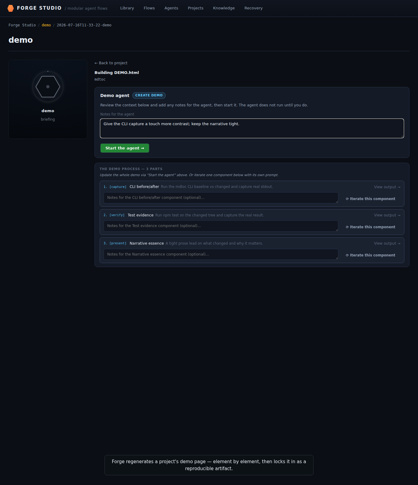
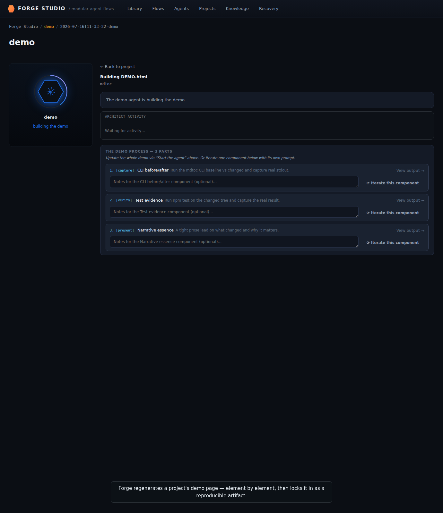
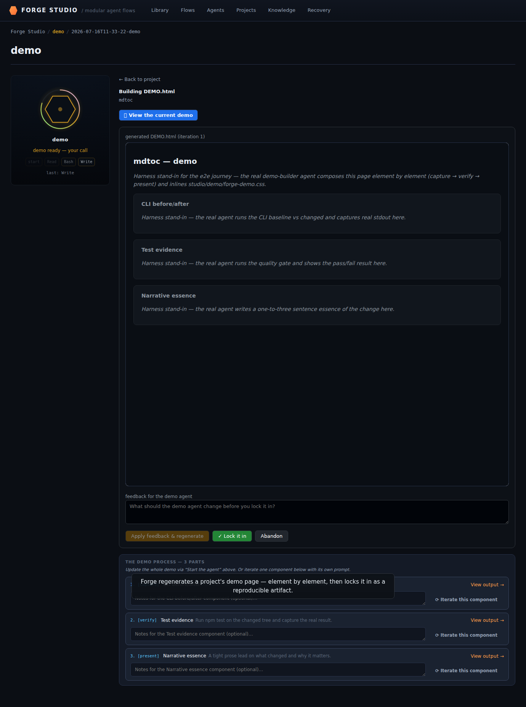
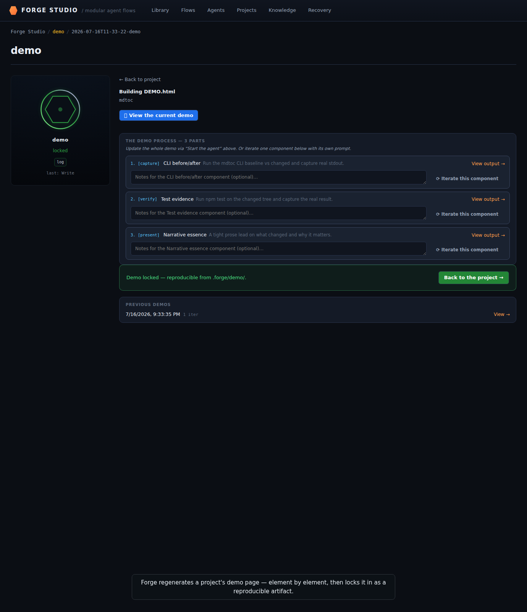
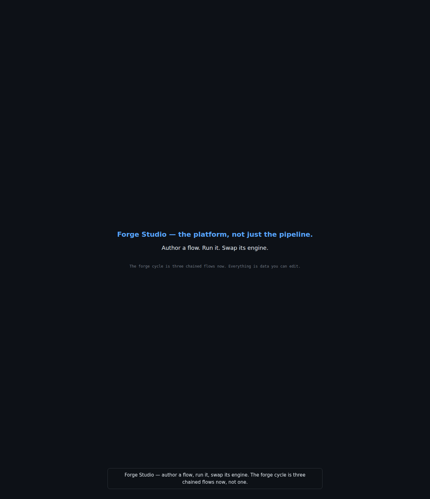

Clone forge → stand up a project → compose the four pillars (flows · skills · agents · knowledge) → run a gated cycle. Grounded on a real mdtoc roadmap feature (in-place TOC injection). Recorded 2026-07-16T11:33:39.437Z.
Full walkthrough
Stand up a project (create new)
As an operator, I create a brand-new project from Studio's library — the create-new path of the capability diagram. AI-assisted instructions- and project-brain-builders seed its AGENTS.md and its seeded-to-grow knowledge base, while the project builder lets me tune north star, demo timeline, and contract readiness.
42/42 checks green
Title card — Studio library
The library page reports ready before anything else loads, and a title card frames the three things Studio does: author a flow, run it, swap its engine.
01-a1-0-title.png — Title — "Forge Studio: author a flow, run it, swap its engine"
Library — everything is data
The library renders flows, agents, projects, and knowledge bases side by side as data cards, plus an operator-pulse panel — including the very flow the operator will author from scratch later in this walkthrough.
First-run orientation + discoverable creation
With the library already populated, the first-run welcome panel correctly stays hidden, and the "+ New Agent" CTA proves creating something new is one click away, not a URL only a developer would know.
02-a1-1-library.png — A1 — Studio library: flows/agents/projects/KBs as data + operator pulse
The operator launches the instructions-creator agent, answers its two clarifying questions, and approves the AGENTS.md it drafts — a new project gets its onboarding contract written for it, with a human still signing off.
11-instr-0-interview.png — Part 1 — instructions-creator interviews before writing AGENTS.md (AI-assisted)12-instr-1-draft.png — Part 1 — the generated AGENTS.md draft, awaiting approvalclips/instr-generate.webm — instructions-creator: AGENTS.md generated with AI assistance13-instr-2-committed.png — Part 1 — AGENTS.md generated + approved (AI-assisted)
project-brain-builder — seed the project brain (AI-assisted)
The project-brain-builder analyses the new project and stages three seed themes for review; approving commits nothing but a pointer — the project's own knowledge base starts here and grows as cycles run.
14-pbrain-0-analyzing.png — Part 1 — project-brain-builder analyses the project (AI-assisted)15-pbrain-1-review.png — Part 1 — the generated seed brain: themes to review + approveclips/pbrain-generate.webm — project-brain-builder: the seed brain generated with AI assistance16-pbrain-2-committed.png — Part 1 — project brain seeded (grows with the project)
Project builder — /projects/mdtoc
In the project builder for mdtoc, the operator tunes north star, demo timeline, and contract readiness at a glance; adding a demo step live-flips the dirty flag, proving nothing here is a static page.
As an operator, I compose the three OOTB plan/dev/review agents from forge's curated starter library, then reopen an existing agent to prove its composition — skills, tools, runtime, budgets — is editable, not fixed once built.
22/22 checks green
Author plan/dev/review agents from the starter library
The operator picks each of the three curated starters in turn — required fields pre-filled, advanced config collapsed — and saves each straight to a SKILL.md that then passes forge's own `studio lint` gate: the agents pillar's OOTB library, tuned through forge's own development, made concrete.
03-j2-0-starter-picker.png — J2 — new agent: pick a curated starter (plan/dev/review) or blank04-j2-1-builder-prefilled.png — J2 — starter pre-fills required fields; advanced collapsed05-j2-2-agents-authored.png — J2 — plan/dev/review agents authored from starters, lint-green
Agent builder — /agents/project-manager
Reopening the shipped project-manager agent, the operator expands Advanced to see its skill/tool/MCP/hook drop zones and runtime SDK, then edits its purpose field and watches the dirty flag flip before discarding — proof an OOTB agent stays modifiable after the fact.
22-a3-0-agent-builder.png — A3 — agent builder: catalog, drop zones, runtime, readiness panel23-a3-1-agent-dirty.png — A3 — data-dirty flips on edit (discarded, no save — seed SKILL.md immutable)clips/agent-build.webm — Composing an agent from the starter library
Author a flow
As an operator, I author a brand-new cycle flow entirely as data — the flows pillar's user-creates path — stringing plan/dev/review agents together, handing the result real work, and proving a from-scratch rebuild of forge-develop is structurally identical to the production seed.
33/33 checks green
String plan/dev/review into a flow (new-flow builder)
From the library's "+ New Flow" CTA, the canvas seeds itself from the basic starter (plan → dev → review, one verdict gate); the operator names and saves it, drags a node to a new position, and reloads — proving the authored flow, and its hand-arranged layout, both persist and pass `studio lint`.
06-j3-0-new-flow-seeded.png — J3 — new flow seeded from the basic starter (plan → dev → review)07-j3-1-flow-arranged.png — J3 — authored flow, node hand-arranged on the canvas08-j3-2-flow-persisted.png — J3 — node positions persist across reload (authored flow is durable)
Give the authored flow work (seeded run on my-first-flow)
The freshly authored flow is handed a real run: its own plan/dev/review hexes progress and park at the verdict gate, with per-phase cost accruing — proof a user-authored flow is a first-class citizen of the monitor, not a demo-only shell.
19-j5-0-authored-run.png — J5 — the authored flow, given work, runs plan → dev → review to the verdict gate
Build the forge-develop flow from scratch (flow-as-data)
Rebuilding forge-develop node-for-node from scratch, `studio lint` validates it and its node set, gate, and edge count match the production seed exactly — the hardcoded cycle really is just one flow definition, and the operator can drag more agents onto it from the same palette.
20-a2-0-scratch-monitor.png — A2 — authored forge-develop-scratch: lint green, parity with seed, runnable by the engine21-a2-1-scratch-build.png — A2 — BUILD canvas: the authored cycle (3 nodes) on the ReactFlow canvas, palette + goal fieldclips/flow-build.webm — the flow builder — compose the cycle as data (nodes · palette · gates)
Stand up a project (onboard existing)
As an operator, I onboard an existing repository through the UI — the onboard-existing path of the capability diagram — and watch forge deterministically resolve it against the project contract until it is ready for development.
16/16 checks green
Onboard a project from the UI
Filling in only a name and north star (the quality gate defaults sensibly), the operator onboards a new project from the library; .forge/project.json lands on disk with the hard contract fields, the project appears in the library, and `studio lint` stays green.
09-j4-0-onboard-form.png — J4 — onboard a project: required fields only (quality gate, north star)10-j4-1-project-readiness.png — J4 — onboarded project: contract readiness reflects the hard fields
onboard existing → deterministically resolve a failing clause
Onboarding a second, existing-style repo trips a real contract clause (no ARTIFACTS convention yet); the operator clicks the one auto-fix action and watches the clause disappear — the repo is aligned to the contract deterministically, no LLM call needed.
17-onb-0-failing.png — Part 1 — onboard existing: a contract clause fails preflight (auto-fixable)clips/onboard-resolve.webm — Preflight resolution — an existing repo aligned to the contract18-onb-1-resolved.png — Part 1 — clause auto-resolved: the existing repo is now contract-ready
Compose a skill
As an operator, I browse forge's OOTB skill library — highly rated skills sourced from existing community libraries, provenance and stars shown — then edit one in place and author a brand-new skill from scratch.
14/14 checks green
OOTB skill library (community-sourced)
The catalog ships a library of community-sourced skills (superpowers, TDD, security-review, and more), each one carrying its source URL, provenance, and star count in the agent builder's palette — the operator can see exactly where a skill came from before dragging it in.
26-sk-0-library.png — Part 2 (skills) — the OOTB skill library, sourced from community repos
Edit a skill
Opening an OOTB skill in the builder, the operator rewrites its instructions body and saves — the change lands straight in that skill's own SKILL.md, proving an out-of-the-box skill is editable text, not a black box.
27-sk-1-edit.png — Part 2 (skills) — editing a skill in the builder
Author a new skill
From a blank builder the operator names a brand-new skill, describes it in one line, and writes its instructions; creating it writes a fresh SKILL.md to the library — the skills pillar's third leg, adding new skills from scratch.
28-sk-2-create.png — Part 2 (skills) — authoring a brand-new skillclips/sk-create.webm — authoring a new skill from scratch29-sk-3-created.png — Part 2 (skills) — new skill authored → SKILL.md on disk → ready to compose
Run a gated cycle
As an operator, I run a gated cycle end-to-end on a real mdtoc feature — idea to architect interview to PLAN gate to an autonomous build to a review gate to merge to reflection — monitoring flow progress and clearing every gate myself from the flow UI.
58/58 checks green
Operator drops the mdtoc idea
The operator types one real mdtoc feature idea into a single field and hits go — no form, no ceremony — and forge opens a fresh architect interview session to run with it.
30-r1-0-idea-typed.png — R1 — operator types a real mdtoc feature idea
Architect grounds itself — P3 activity panel
Before asking a single question, the architect reads the CLI source and the brain — every tool call and reasoning line streams live into the activity panel, so the operator watches it ground itself in the real codebase rather than guess.
31-r1-1-activity-midstream.png — R1 (mid-stream) — P3 activity panel filling while the architect reads the CLI source32-r1-1-activity-settled.png — R1 (settled) — P3 activity panel: tool calls + reasoning rows persisted
Architect returns questions
The architect comes back with exactly two clarifying questions — schema default and acceptance fixture — asking only what it genuinely cannot resolve on its own.
The operator answers Q1 with a radio option but overrides Q2 entirely in free text; the question resolves on the typed answer and every radio stays unselected — proving the operator is never boxed into the offered choices.
34-r1-3-freetext.png — R1 — P2: operator types a free-text answer on Q2 (overriding the option list)35-r1-3b-drafting.png — R1 — planning: architect drafts with the answers folded in
Stall cameo — P1 StuckWarning
A staged stale heartbeat makes the architect look stuck for two minutes and the StuckWarning lights up; once the session resumes the warning clears on its own — the operator always sees when forge has gone quiet, and when it hasn't.
36-r1-4-stale-warning.png — R1 — P1: StuckWarning renders when the architect goes quiet for >2 min
Architect drafts — P4 real cost
The architect emits its plan and the hex greens at $0.00 — that's not a bug: real cycles meter the architect turn out-of-cycle, its duration tracked but its dollar cost billed elsewhere, and the demo owns that honestly rather than hiding it.
37-r1-5-architect-cost.png — R1 — P4: architect hex greens ($0.00 — real cycles meter it out-of-cycle)
Rich PLAN.html (gate)
The plan gate presents the architect's output as rendered Given/When/Then acceptance-criteria cards, not raw markdown — the same PLAN.html the PM will read verbatim once approved.
38-r2-0-plan-html.png — R2 — rich PLAN.html with Given/When/Then AC cards
Send-back + revised plan
The operator sends the plan back with one concrete piece of feedback (cover the no-markers case); the architect reruns and re-presents a revised plan carrying a "(revised)" badge — human gate #1, working as a real gate.
39-r2-1-send-back.png — R2 — operator sends the plan back with feedback40-r2-1b-revised-plan.png — R2 — revised plan re-presented with (revised) badge
Approve → watch it build
Approving the plan hands off to the second flow, Forge Develop; clicking "Watch it build" lands on its monitor, which shows only the develop slice's own hexes — while the same threaded run's architect slice, checked separately, sits complete on its own flow at that honest $0.00.
41-r2-2-approve.png — R2 — operator approves the plan (human decision #1 complete)42-r2-2b-monitor-landing.png — R2 — "Watch it build →" lands on the Studio flow monitor43-r2-2c-monitor-live.png — R2 — Forge Develop monitor shows the build slice live (run rail + topology)
PM decomposes ACs into work items
The project-manager phase turns the plan's acceptance criteria into two dependency-ordered work items straight from Given/When/Then, not vague tasks; clicking either the phase hex or a WI hex opens its own drawer of detail.
44-r3-0-pm-midpulse.png — R3 (mid-pulse) — PM hex active as it emits work items45-r3-0b-pm-settled.png — R3 — PM decomposed ACs into 2 dependency-ordered work items46-hex-detail-phase.png — Phase drawer — phase hex opens the detail drawer (held open)47-hex-detail-wi.png — Phase drawer — wi hex opens the detail drawer (held open)
Dev-loop TDD red — gate.expected-fail
The dev-loop's first move on WI-1 is a failing test — gate.expected-fail fires before any implementation exists — TDD is the loop's actual discipline, not a claim in a prompt.
48-r3-1-gate-fail.png — R3 — TDD red: gate.expected-fail — the inject test fails before src/inject.ts exists
Dev-loop GRIND (fast-forward)
The dev-loop keeps grinding on WI-1 (fast-forwarded here): tool calls accumulate and the token/cost bar climbs live — the operator can watch the actual work happen, not a spinner.
WI-1's gate passes and only then does WI-2 — which declared WI-1 as a dependency — begin: the scheduler enforces the ordering the plan declared, visibly, rather than racing both work items at once.
50-r3-3-wi1-green.png — R3 — gate.pass; WI-1 green; WI-2 (depends on WI-1) only now starts51-r3-3b-devloop-green.png — R3 — dev-loop hex greens (both WIs done); unifier runs next on its own hex
Unifier on its own hex
With both work items green, the unifier phase's own hex activates and merges them into one branch, runs the gate, and authors the demo — the seam between many parallel WIs and one reviewable change, made visible.
52-r3-4-unifier-midpulse.png — R3 (mid-pulse) — unifier hex active, running the gate + acceptance on the merged branch53-r3-4b-unifier-green.png — R3 — unifier (own node) greens after authoring the demo
Cost rollup
The cycle badge sums exactly what dev-loop and unifier already accrued ($1.75 + $1.20) — the rollup is arithmetic on real per-phase numbers the operator watched tick up, not a separate estimate.
54-r3-5-cost-rollup.png — R3 — cost rollup across the spine (Studio monitor)
Review — comment-on-page visual demo (PARTIAL)
The review page renders the actual DEMO.md with a before/after slider and per-region comment anchors; AC-2 reads PARTIAL — a real gap surfaces before the operator ever has to decide anything.
55-r4-0-review-partial.png — R4 — review demo: AC-1 MET (CLI read-back), AC-2 PARTIAL (newline drift on re-write)56-r4-0b-slider.png — R4 — before/after image-comparison slider for the TOC region
Send-back — operator anchors a blocking comment to AC-2
The operator anchors a blocking comment directly on AC-2 instead of filling out a form; the page derives a send-back verdict from that comment alone, and it survives a reload — progressing the gate through the flow UI, on the artifact itself.
57-r4-1-comment.png — R4 — a blocking comment anchored to AC-2 (the send-back, on the page)58-r4-1b-send-back.png — R4 — the comment persists; the derived verdict is "send back"
Dev-loop reruns on feedback (fast-forward)
The anchored comment routes straight back to the dev-loop, which reruns on exactly that criterion and re-renders the demo — the send-back was real routing, not a dead-end button.
59-r4-2-rerun.png — R4 (fast-forward) — dev-loop reran on the new criterion; back to "Review →"
Re-review — PARTIAL→MET
AC-2 now reads MET; resolving the original blocking comment flips the page's derived verdict from send-back back to approve — the loop closed on the operator's own criterion, not a generic re-run.
60-r4-3-rereview-met.png — R4 — re-review: AC-2 now MET (PARTIAL→MET payoff)
Approve & merge → completed spine
The operator approves and the PR merges for real; the run rail deliberately holds at "active" rather than "complete" while reflection is still in flight — a merged cycle genuinely isn't done until its lesson lands, and the monitor tells the truth about that.
61-r4-4-approve.png — R4 — operator approves (human decision #2 complete)62-r4-4b-reflect-link.png — R4 — merged; "Reflect on this cycle →" surfaces the final human moment63-r4-4c-spine-complete.png — R4 — merged; the spine holds at "active" while reflection finishes out-of-band64-r4-4d-architect-flow.png — The Forge Architect flow on its own monitor — architect + PM hexes only, no dev or unifier
Reflect
The operator answers the reflection questions — WI sizing, repeated actions, a free-text lesson — and only once that submits does the reflector write a brain theme and the run rail finally flips to complete.
65-r5-0-reflect-page.png — R5 — reflection screen: WI-sizing + repeated-actions/roadblocks + general-notes (the S8 deeper retro)66-r5-0b-reflected.png — R5 — feedback captured; reflector folds it into the brain67-r5-1-reflect-flow.png — The Forge Reflect flow on its own monitor — the single reflect hex, fired automatically on merge
Flow monitor deep-dive — /flows/forge-develop (Model B develop slice)
On a freshly gated run, clicking the unifier hex opens its own drawer of gate sub-checks and phase log — every phase and WI hex from a live cycle stays this inspectable, not just while it's running.
Engine — start-run CTA (forge-develop-scratch, no runs)
On the from-scratch forge-develop-scratch flow — never yet run — the Start Run button is live and enabled, proving the engine can launch any authored flow directly from the UI, not only the seeded production ones.
74-s1-1-start-run.png — S1 — engine: Start Run CTA enabled on a flow with no runs
Engine — gate control + cost on the gated run
A second run parks itself at its gate and links straight through to the verdict screen, its accrued cost metered against the flow's own ceiling — the operator progresses this gate from the monitor, not a separate tool.
75-s1-2-gate-control.png — S1 — engine: gated run parked, cost metered against the flow ceiling
Project roadmap
As an operator, I browse a project's serpentine roadmap of initiatives over time and click "Start development" on a pending one — the roadmap extension proving the initiative timeline actually drives what forge builds next, not just a passive history view.
7/7 checks green
Per-project Roadmap tab
The Roadmap tab renders every initiative as a dot on a serpentine timeline; clicking a completed one pops a detail card listing its actual work items — the roadmap is read straight off real cycle history, not a hand-maintained list.
68-r6-0-roadmap-tab.png — R6 — per-project Roadmap tab: the serpentine timeline of initiatives over time69-r6-0b-popover.png — R6 — clicking an initiative dot pops its detail card up off the timeline
Start development trigger (DEC-3)
A decomposed-but-not-yet-built initiative offers "Start development" right on its roadmap card; clicking it repoints the manifest at the forge-develop flow and threads the architect-minted cycle id — the timeline itself is the trigger, not a separate queue command.
70-r6-1-start-development.png — R6 — the "start development" trigger on a pending initiative71-r6-1b-development-started.png — R6 — development started: the unifier will open a PR for review
Swap the runtime adapter
As an operator, I open an agent's runtime picker to prove the SDK/model choice is a registry-driven seam — claude selectable today, gemini and codex visibly disabled until their adapters ship, with a range strategy for routing across model tiers.
9/9 checks green
Runtime-adapter seam — /agents/project-manager
On the project-manager agent, claude's SDK card is selectable while codex and gemini sit visibly disabled (no adapter registered yet); switching to the range strategy picks multiple Claude tiers and the YAML preview updates live to `strategy: range` — the swap seam, not a config file the operator has to hand-edit.
76-s2-0-sdk-picker.png — S2 — adapter seam: claude selectable; codex/gemini disabled (registry-driven)77-s2-1-range-chips.png — S2 — range mode: 2 Claude tier chip(s) selected; routes to the cheapest capable tier first78-s2-2-yaml-range.png — S2 — YAML preview shows strategy: range (authored in UI; no Save — seed SKILL.md immutable)
Knowledge graph
As an operator, I browse the real cycles brain as a force-graph, pin a piece of human guidance onto it, and run lint/index maintenance — the knowledge pillar's OOTB brains, edited through both deterministic tooling and my own guidance-plus-ingest loop.
The knowledge screen force-graphs the real cycles brain — theme and index nodes, KB health panel, a backend selector — and clicking a theme node opens its full article; this is the actual OOTB cross-cycle brain, not a mock graph.
The operator types a lesson straight into the HUMAN GUIDANCE panel and pins it; a guidance node appears in the graph immediately — human guidance is how the brain grows between ingest passes, visible as its own node until the next one folds it in.
81-s3-1-guidance-typed.png — S3 — guidance text typed into the HUMAN GUIDANCE panel82-s3-1b-guidance-pinned.png — S3 — guidance pinned: data-guidance-pinned="true", guidance node in graph
KB maintenance — lint / index / OOTB brains
The operator runs the real kb-lint and kb-index actions from the maintenance panel — structural checks and a regenerated index, not cosmetic buttons — and the KB selector confirms both cycles and forge-dev ship as OOTB brains: the knowledge pillar is edited through lint/index tooling, on top of the human-guidance loop from the beat before.
83-kb-0-lint.png — Part 2 (knowledge) — kb-lint: lint: 2 finding(s)84-kb-1-maintenance.png — Part 2 (knowledge) — lint/index maintenance + the resolution surfaceclips/kb-lint.webm — KB lint findings triaged from the maintenance surface
Recover a stuck initiative
As an operator, I open the dedicated recovery screen to inspect, requeue, or abandon a stuck cycle — the recovery extension, proving forge surfaces its own failure states in the UI rather than requiring me to dig through logs or a CLI.
2/2 checks green
Recovery surface — the operator surface for stuck cycles (DEC-6)
The /recovery screen renders every stuck initiative (or a clean empty state when there are none) with inspect/requeue/abandon actions — the CLI verbs that used to handle this moved here, so a stuck cycle is recovered in-UI, not by an operator dropping into a terminal.
85-s4-recovery.png — S4 — Recovery: inspect/requeue/abandon a stuck cycle, all in the UI (CLI retired)
Regenerate the demo page
As the operator, I regenerate a project's demo page element by element — brief the agent, watch it compose the capture/verify/present trio, review the result, and lock it in as the reproducible artifact.
11/11 checks green
Brief the demo agent
Before the agent touches anything, the operator types one line of steering ("give the CLI capture more contrast") into a real briefing field — the regenerate isn't a blind rerun, it takes direction first.

86-demo-0-briefing.png — The demo agent — briefing before it runs
The demo agent composes the page, element by element
The agent works through all three demo-process steps — capture, verify, present — each one bound to its own element, then hands back an iframe preview for the operator to review before anything is locked in.

87-demo-1-generating.png — The demo agent composes the page, element by element

88-demo-2-review.png — The demo agent — composed demo ready for reviewclips/demo-generate.webm — The demo builder regenerates the page element by element
Lock the demo in
Locking writes demo.lock.json plus a history entry to disk and returns the operator to the project — the regenerated demo becomes the one reproducible artifact for this cycle, not a throwaway preview.

89-demo-3-locked.png — The demo agent — locked in as the reproducible demo artifact
Finale

90-end-card.png — End card — "Author a flow. Run it. Swap its engine."